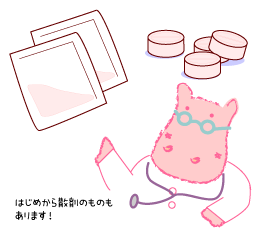

|
Lesson6 : 先天性甲状腺機能低下症（クレチン症）の治療
6-1 クレチン症の治療ガイドライン
クレチン症の治療については、全国的に統一された「ガイドライン（診断・治療指針）」があります。
先天性甲状腺機能低下症マススクリーニングのガイドライン（1998年版）（＊１：1998年版ガイドライン）日本小児科学会雑誌1998;102:817-819に掲載されています。
これは、全国どこでも同じような治療が受けられるように、クレチン症の専門家が集まって作ったのもです。クレチン症に詳しい小児内分泌専門医ではなくても、小児科医であれば誰でも標準的な治療を行うことができるということを目的にしています。
最近、日本の医療の現場では、「（科学的）根拠に基づいた医療（evidence-based medicine, EBM）」という考え方が広がっており、ガイドラインが作成されたのもこういった背景があります。
専門医がいる病院が近くにない（特に地方の）場合でも、専門医と変わらない診療が受けられなくてはなりません。このように日本のどこに住んでいるお子さんでも、同じような標準的な診療を受けられることが保証されることは、とても大事なことです。こうしたことを最近では、「医療の均てん化」と呼んでいます。「均てん（均霑）」（「霑」は、うるおうの意）は「平等に恩恵や利益を受けること」ですが、がん医療に関連して使われるようになりました。がん医療にあまりに大きな地域格差がみられ始め、患者の皆さんの働きかけで、国は「がん対策基本法」（（平成十八年六月二十三日法律第九十八号））という法律により、がん治療の均てん化を進めています。
全ての病気について、法律を作ることは無理ですが、それに代わるものがガイドラインといえます。ガイドラインを参考にした標準的診療を行うことが求められます。
＊１（1998年版ガイドライン）：このガイドラインができて10年近くたっています。多くのガイドラインは、医学・医療の進歩にあわせ、定期的な（３～５年ごと）改訂が求められてます。クレチン症ガイドラインも、１、２年以内の改訂を目指して、日本小児内分泌学会、日本マス・スクリーニング学会の担当者による作業が始まっています。（2007年９月～）
6-2 クレチン症の治療お子さんにクレチン症が疑われ、病院を受診し、最初の診察や血液検査により、中等度から重度の甲状腺機能低下症の症状や検査所見が認められるなど、早期に治療を始めた方が良いと考えられた場合は、薬による治療（薬物療法）が始められます。 薬は日本全国どこでも、同じ成分のものが使われますが、薬の名前は違うことがあります。薬の名前は、成分を示す一般名（レボチロキシンナトリウム、Levothyroxine
Sodium）と商品名があり、レボチロキシンナトリウムは「チラーヂンＳ錠」（あすか製薬）や「レボチロキシンNa錠」（サンド製薬）といった錠剤があります。1錠は25、50、100μgで、子どもが少し大きくなって薬の量が一定になると使われますが、それまでは散剤（粉薬）が処方されます。以前は錠剤をつぶして散剤にしていましたが、今では最初から散剤のもの（チラーヂンS散0.01%＝1ｇ中に薬の成分として100μg）があります。 |
|
|
1998年版ガイドラインに標準的なチラーヂンＳの治療量が示されています。中等度から重度の甲状腺機能低下症の場合、体重1kgあたり１日量10μg（10μg／kg／日）が標準とされています。軽度の甲状腺機能低下症では3～5μg／kg／日で始めることもあります。 |
 |